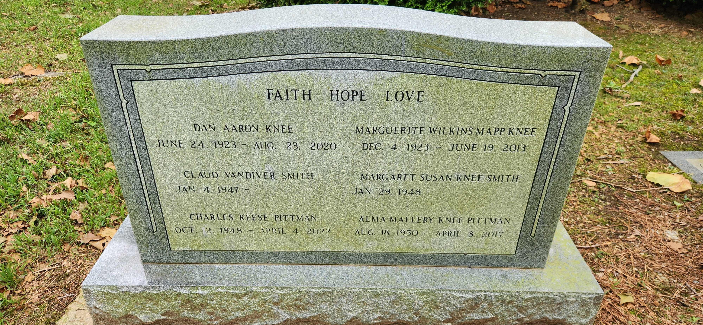

Faith Hope Love

Dan Aaron Knee
June 24 1923 - Aug 23 2020
Marguerite Wilkins Mapp Knee
Dec 4 1923 - June 19 2013
Claud Vandiver Smith
Jan 1947 -
Margaret Susan Knee Smith
Jan 29 1948 -
Charles Reese Pittman
Oct 2 1948 - April 2 2022
Alma Mallery Knee Pittman
Aug 18 1950 - April 8 2017